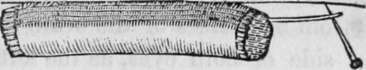

Chapter XII. The Nerves And Their Functions
Description
This section is from the book "Human Physiology For The Use Of Elementary Schools", by Charles Alfred Lee. Also available from Amazon: Human Physiology, for the Use of Elementary Schools.
Chapter XII. The Nerves And Their Functions
1. In describing the nerves and their functions, it will be necessary to classify them, or to reduce them to such arrangement, as the present state of our knowledge on the subject will admit. The following comes as near such a classification as it is possible to make :-1. Nerves of Special Sense, 2. Motific Nerves. 3. The Respiratory Nerves. 4. The Regular Nerves, 5. The Ganglionic Nerves.
2. First Order
The nerves which contribute to the senses of sight, hearing, and smell, constitute the first class, and are called Nerves of Specific Sense; because they are incapable of communicating any other impressions, than such as belong to the respective senses with which they are connected. For example, the olfactory can only transmit ideas of odours, the optic of colours, the auditory of vibrations, no matter what the stimulants may be which excite them to action. If we send an electric shock to the eye, it receives the impression of light; to the ear, of sound ; and to the nose, an odour is perceived : so also, if we press or strike the ball of the eye, we experience a vivid sensation of light, and the same phenomenon occurs when the eye is pierced by the needle of the surgeon : so also, if we take two pieces of different kinds of metal in the mouth, and placing one over, and the other under the tongue-allow their edges to come together, we perceive at once a peculiar taste, excited by galvanism. Thus do these nerves communicate to the mind that they are affected in the only manner of which they are capable.
This cut represents a portion of nerve, showing the filaments of which it is composed, and one of them drawn out.
3. First, Or Olfactory
These nerves take their name from " olfactus," the smell, as they are essential to this sense. They are the softest nerves in the body, and more closely connected with the hemispheres of the brain than any other. They lie immediately under the anterior lobes of the brain; and as they pass on, they swell into a bulb, from which numerous fibres issue, and pass into the nose through a plate of one of the bones of the skull. This plate is pierced with so many holes for transmitting these twigs of the nerve, that it has the appearance of a seive; and from this circumstance is called the ethmoid bone. The olfactory nerve is spread out upon the lining membrane of the nose, and is merely defended by a thin layer of mucus. It was necessary that these nerves should come to the surface, in order to come in contact with the vapours inhaled by the nostrils. In some animals these nerves are very large, especially in ruminants, but in others they are entirely wanting, as in whales. In fishes, you may see the bulb of the olfactory placed immediately under the cup like nostril. From the bulb, the nerve runs backward along a canal filled with transparent fluid, enters the skull, and joins the brain.
4. The Second, Or Optic
These are the largest of the cerebral nerves, and can be traced as far back as the medulla oblongata at the base of the brain. They pass along the base of the brain, and just before they enter the orbits they unite with each other, or seem to decussate, or cross each other. In some fishes, these nerves evidently cross without union; but in man, it is now pretty well established, that a semidecussation takes place ; that is, one half of the right optic nerve crosses to the opposite side, and joins a half of the left nerve to proceed to the left eye ; so that each eye receives its optic nerve from both sides of the brain ; the right supplying the right side of both eyes, as the left does its corresponding side of both. After the nerve has entered the orbit, it proceeds forwards to the ball of the eye, and penetrating the coats of that organ, expands into a very delicate web, or nervous net work, called the retina, which serves to receive the image of objects falling upon it.
5. The Auditory Nerve
The last nerve of specific sense, runs along with another, the two together being known as the seventh, of which the auditory forms the soft portion, or portio mollis. It arises from the medulla oblongata, and goes on in contact with the hard portion, or portio dura, to the internal auditory passage, which they enter. Here the soft portion spreads out into a great many small branches, which are distributed over the surface of the internal portions of the ear, and their extremities float in the water contained in the labyrinth, from which they receive vibrations which produce the impressions of sound.
6. Second Order
The motiferous nerves, which constitute the second order, consist of three nerves ; the third, the sixth, and the ninth, with perhaps a branch of the fifth. These take their origin at the anterior columns, in the same line with each other ; but fibrils of sensation afterwards join them, so that they are analogous to the double rooted nerves of the spinal marrow.
7. The third pair rise from the crura of the brain, and pass forward to a hole in the bottom of the orbit, through which they enter, and supply four of the six muscles which move the eye, and also the muscle which moves the upper eye lid, thus placing these muscles under the command of the will. Besides this, a small twig of the fifth nerve swells out into a ganglion, and then joins a twig from the third, which go on together, and penetrate the coats of the eye, to which they impart sensibility, and are connected with the functions of the iris. It is worthy of remark, that here the general law is kept, viz., that a ganglion is formed in the sensific nerves, before they become associated with the filaments of motion.
8. The sixth pair arise near the last, and also enter the orbit; here they are entirely expended upon the muscle which turns the eye towards the temple. Where this nerve has been injured or lost its power, the eye is permanently turned in towards the nose ; and such a person is said to be cross eyed.
Continue to:
- prev: The Spinal Marrow And Its Functions. Continued
- Table of Contents
- next: The Nerves And Their Functions. Part 2
Tags
humans, anatomy, skeleton, bones, physiology, organs, nerves, brain